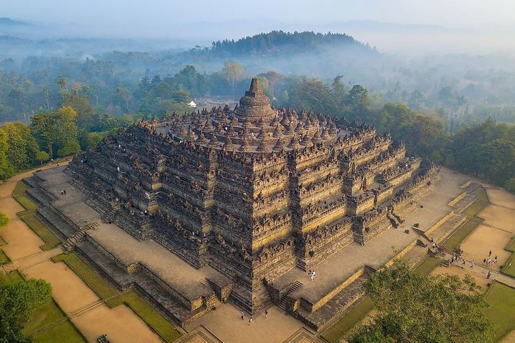

Dua Keajaiban Dunia dari Jawa
Indonesia memiliki dua candi megah yang diakui sebagai Warisan Dunia oleh UNESCO, yaitu Candi Borobudur dan Candi Prambanan. Kedua candi ini tidak hanya menjadi bukti kejayaan peradaban masa lalu, tetapi juga simbol toleransi dan kerukunan antar umat beragama di Indonesia. Dengan arsitektur yang memukau dan nilai sejarah yang tinggi, kedua candi ini terus memesona pengunjung dari seluruh dunia.
Candi Borobudur
Candi Buddha terbesar di dunia yang dibangun pada abad ke-9 di masa pemerintahan wangsa Syailendra. Borobudur memiliki struktur berbentuk mandala dengan 504 arca Buddha dan 2.672 panel relief yang menceritakan kehidupan Buddha dan ajaran-ajarannya.
Candi Prambanan

Kompleks candi Hindu terbesar di Indonesia yang dibangun pada abad ke-9. Prambanan memiliki tiga candi utama yang dipersembahkan untuk Trimurti: Siwa (tertinggi), Wisnu, dan Brahma, dikelilingi oleh ratusan candi kecil yang indah.
Keunikan Arsitektur
Borobudur: Gunung Teratai
Borobudur dibangun menyerupai bunga teratai yang mengapung di atas danau, dengan tiga tingkatan yang melambangkan kosmologi Buddha: Kamadhatu (dunia keinginan), Rupadhatu (dunia berbentuk), dan Arupadhatu (dunia tanpa bentuk).
Prambanan: Menara Siwa
Candi Siwa di Prambanan menjulang setinggi 47 meter, dihiasi relief Ramayana yang mengelilingi candi dan patung-patung dewa yang megah. Arsitekturnya mencerminkan konsep Hindu tentang hubungan antara manusia dan dewa-dewa.
Relief yang Mengagumkan
Kedua candi memiliki panel relief yang menceritakan kisah-kisah agama dan kehidupan masyarakat Jawa kuno. Relief di Borobudur menggambarkan kehidupan Buddha dan ajaran-ajarannya, sementara Prambanan menampilkan epik Ramayana dan Krishnayana.
Presisi Matematis
Pembangunan kedua candi menunjukkan pemahaman matematika dan astronomi yang sangat maju pada masa itu. Borobudur dibangun dengan proporsi yang sempurna, sementara Prambanan memiliki orientasi yang tepat sesuai dengan arah mata angin.
Sejarah & Penemuan Kembali
Abad ke-9
Borobudur dibangun oleh wangsa Syailendra yang menganut Buddha, sementara Prambanan dibangun oleh wangsa Sanjaya yang beragama Hindu, menunjukkan toleransi beragama di Jawa kuno.
1006
Letusan gunung Merapi dan pergeseran kekuasaan menyebabkan kedua candi mulai ditinggalkan dan tertutup vegetasi selama berabad-abad.
1814
Borobudur ditemukan kembali oleh Thomas Stamford Raffles dan mulai dipugar secara bertahap.
1918-1953
Prambanan dipugar secara besar-besaran setelah ditemukan dalam keadaan runtuh akibat gempa bumi.
1991
UNESCO menetapkan Borobudur dan Prambanan sebagai Warisan Dunia, mengakui nilai universal mereka yang luar biasa.
Kuis Interaktif
Kunjungan ke Candi Borobudur dan Prambanan memberikan pengalaman yang tak terlupakan. Kedua candi ini tidak hanya menunjukkan keahlian arsitektur nenek moyang kita, tetapi juga menjadi bukti nyata toleransi beragama di Indonesia. Borobudur sebagai candi Buddha dan Prambanan sebagai candi Hindu berdiri megah di tanah Jawa, saling melengkapi sebagai warisan budaya dunia yang harus kita jaga dan lestarikan.
Sebagai generasi muda, kita memiliki tanggung jawab untuk mempelajari, menghargai, dan melestarikan warisan budaya ini. Dengan memahami nilai-nilai yang terkandung dalam kedua candi ini, kita dapat mengambil pelajaran tentang toleransi, seni, dan kebijaksanaan dari masa lalu untuk membangun masa depan yang lebih baik.
"Melihat langsung kemegahan dan keindahan Prambanan di bawah sinar matahari adalah pengalaman yang tak terlupakan. Kedua candi ini adalah bukti nyata keagungan peradaban Indonesia di masa lalu."